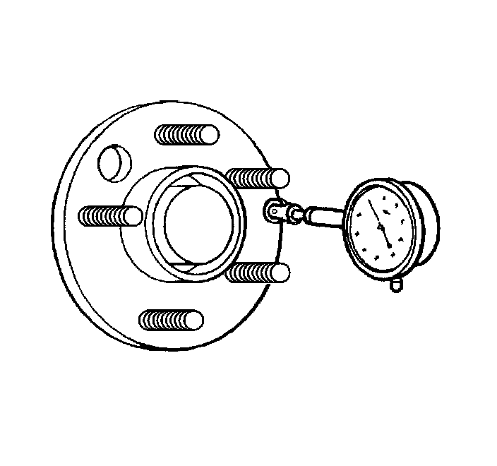
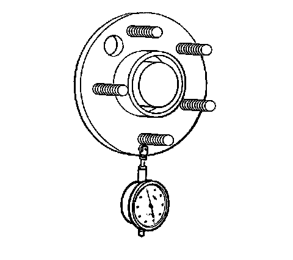

Hub/Axle Flange and Wheel Stud Runout Inspection
Hub/Axle Flange and Wheel Stud Runout Inspection
Tools Required
J 8001 Dial Indicator Set, or equivalent
1. Raise and support the vehicle. Refer to Lifting and Jacking the Vehicle (Service and Repair) .
2. Mark the location of the wheels to the wheel studs and mark the specific vehicle position on each tire and wheel - LF, LR, RF, RR.
3. Remove the tire and wheel assemblies from the vehicle. Refer to Tire and Wheel Removal and Installation (Service and Repair) .
4. Remove the brake rotors and/or brake drums from the vehicle. Clean the mounting surfaces of the brake rotors, the brake drums, if equipped, and the hub/axle flanges of any loose debris, rust, and corrosion.

5. Position the J 8001 , or equivalent, on the machined surface of the wheel hub/axle flange outside of the wheel studs.
6. Rotate the hub one complete revolution in order to find the low spot.
7. Set the J 8001 , or equivalent, to zero at the low spot.
8. Rotate the hub one more complete revolution and measure the total amount of wheel hub/axle flange runout.
Wheel hub/axle flange runout tolerance guideline: 0.132 mm (0.005 in)
9. If the runout of the wheel hub/axle flange IS within specification and the vehicle is equipped with wheel studs, proceed to step 13.
10. If the runout of the wheel hub/axle flange IS within specification and the vehicle is equipped with wheel bolts, proceed to step 19.
11. If the runout of the wheel hub/axle flange is marginal, the wheel hub may or may not be the source of the disturbance.
12. If the runout of the wheel hub/axle flange is excessive, replace the wheel hub/axle flange. Measure the runout of the new wheel hub/axle flange.

13. Position the J 8001 , or equivalent, in order to contact the wheel mounting studs.
Measure the stud runout as close to the flange as possible.
14. Turn the hub one complete revolution to register on each of the wheel studs.
15. Zero the J 8001 , or equivalent, on the lowest stud.
16. Rotate the hub one more complete revolution and measure the total amount of wheel stud - stud circle - runout.
Wheel stud runout tolerance guideline: 0.254 mm (0.010 in)
17. If the runout of the wheel studs - stud circle - is marginal, the wheel studs may or may not be contributing to the disturbance.
18. If the runout of the wheel studs - stud circle - is excessive, replace the wheel studs as necessary. Measure the runout of the new wheel studs.
19. Inspect the threads and the tapered seat portion on each of the wheel bolts for damage.
20. Wheel bolts exibiting damaged threads and/or damaged tapered seats require replacement.
21. Place the threaded portion of each wheel bolt along a straight edge to inspect for straightness.
22. Wheel bolts that are not straight require replacement.